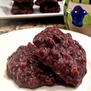

Chocolate Peanut Butter Cookies
- 1/2 cup butter
- 1/2 cup milk
- 1/2 cup cocoa
- 1 teaspoon vanilla extract
- 1/2 cup creamy peanut butter
- 3 cups Quick Oats
In a medium to large size sauce pan, heat butter, milk, sugar and cocoa over medium heat, blending well and stirring continuously. Bring to a boil. Once boiling, allow to boil (while continuing to stir) for 1 1/2 minutes then remove from heat
Next add vanilla and peanut butter and blend well, then add oats, blend well. Drop large spoonfuls of batter on wax paper. Allow to cool/set for 25 to 30 minutes on counter.
Enjoy with a big glass of cold milk!